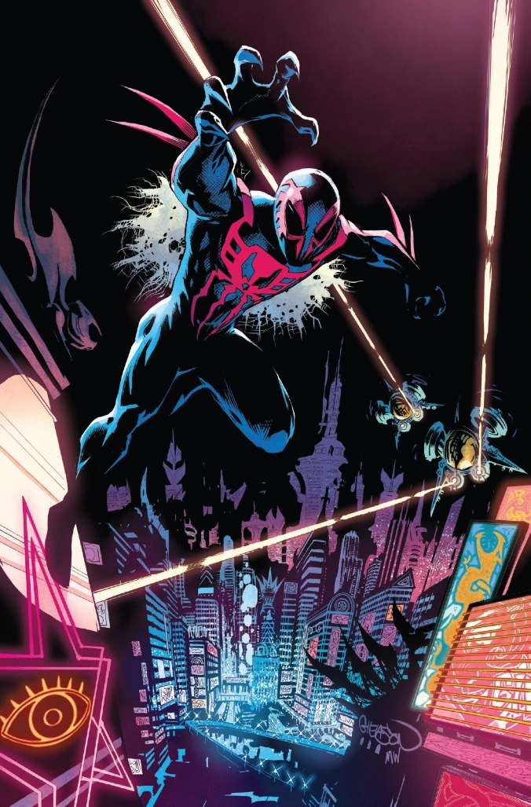

Spiderman Miguel O'hara
Miguel O'Hara, es un joven científico de origen mexicano/irlandés que trabajaba para la corporación Alchemax en un
proyecto para crear seres humanos mejorados genéticamente, inspirándose en las habilidades del Spider-Man del siglo XXI.
Adopta la identidad secreta de Spider-Man tras obtener accidentalmente poderes sobrehumanos.
